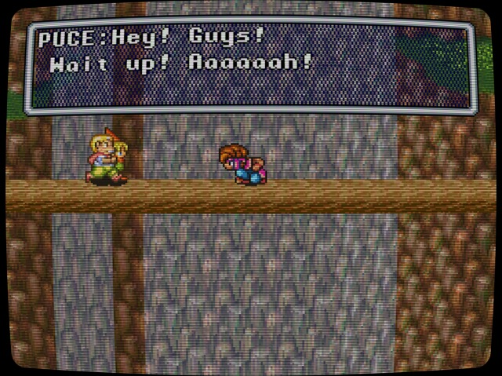

An update? Progress! I’d better talk a bit about what sort of content I want to produce and when I intend for them to happen.
Following on from my thoughts on the SNES Classic Mini I intend to do a review/thoughts style post and video on each game included on the cute 16-bit box in the run-up to its launch.
I’m planning to start actively populating my YouTube channel so 21 reviews seem as good a thing to start with as anything. They’ll be a good way of practising basic video editing too (hopefully improving as I go!)

I’d also like to start doing Let’s Play videos, I’ve intermittently streamed on and off for the last few years and scheduling has always been an issue. Because of that I’m thinking that doing them as edited videos might make more sense. Doing them that way means I can record as time allows.
This is just spitballing at the moment as I’ve no idea how long scripting and editing videos like that would take but it’s something I’m thinking about.
Anyone who knows me will also know I’ve had plans for a series called RETROspective on the backburner for a while. It involves looking back at developers from the old 8-bit microcomputer days like Gargoyle Games that created games that’ve stuck with me in one way or another. I have had three scripts written for a while and just need to record them and sort out something visual for them.

So that’s something else that I plan on finally getting out in some form at some indeterminate time in the future! I have fond memories of the ZX Spectrum, Amstrad CPC and other systems of the era so it’d be nice to put some hopefully interesting videos out that talk about developers that don’t have much covering them.
There is no timeline for any of these things but they are all projects that I want to spend time on. I have a whole bunch of other ideas for columns on this blog, but I’ll talk about those another time.
I’d better get cracking on the first SNES review…